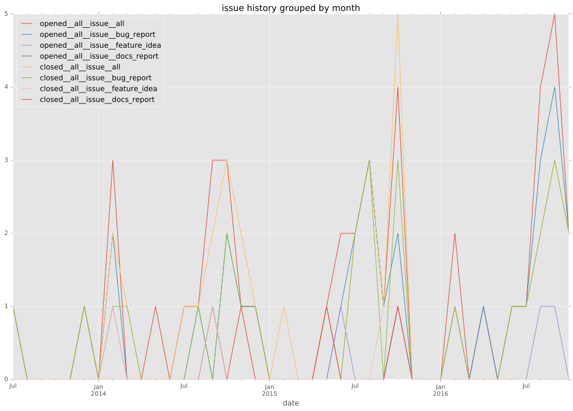
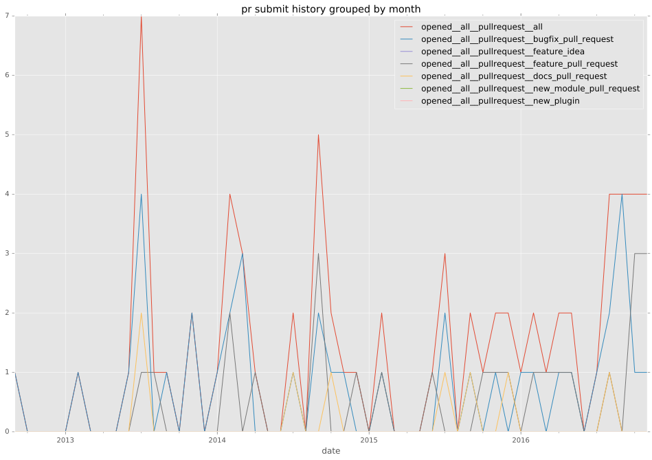
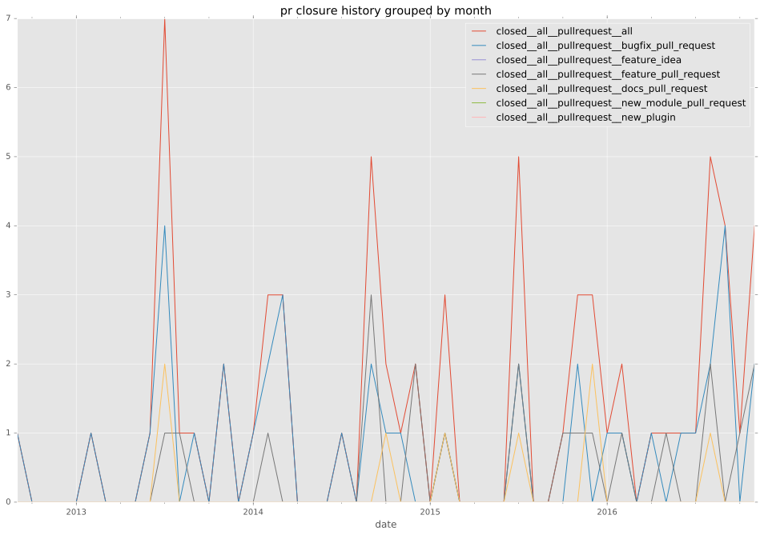

total issue counts
bugfix pull request: 22
docs report: 7
pullrequest: 48
docs pull request: 8
feature pull request: 18
feature idea: 5
issue: 38
bug report: 26
issue history

pullrequest history


days open by issue type
feature pull request
count: 30
std: 55.629614622
min: 0
max: 225
median: 5.0
mean: 31.9666666667
all
count: 110
std: 42.0451611919
min: 0
max: 225
median: 1.5
mean: 17.1727272727
pullrequest
count: 0
std: nan
min: nan
max: nan
median: nan
mean: nan
docs pull request
count: 13
std: 59.7339185525
min: 0
max: 210
median: 2.0
mean: 23.1538461538
docs report
count: 6
std: 67.1267457874
min: 1
max: 147
median: 21.5
mean: 55.0
bugfix pull request
count: 33
std: 1.47388889841
min: 0
max: 5
median: 0.0
mean: 0.878787878788
feature idea
count: 4
std: 47.4727992293
min: 2
max: 105
median: 15.5
mean: 34.5
issue
count: 0
std: nan
min: nan
max: nan
median: nan
mean: nan
bug report
count: 24
std: 9.13188394297
min: 0
max: 27
median: 0.0
mean: 5.5
closures grouped by total days open